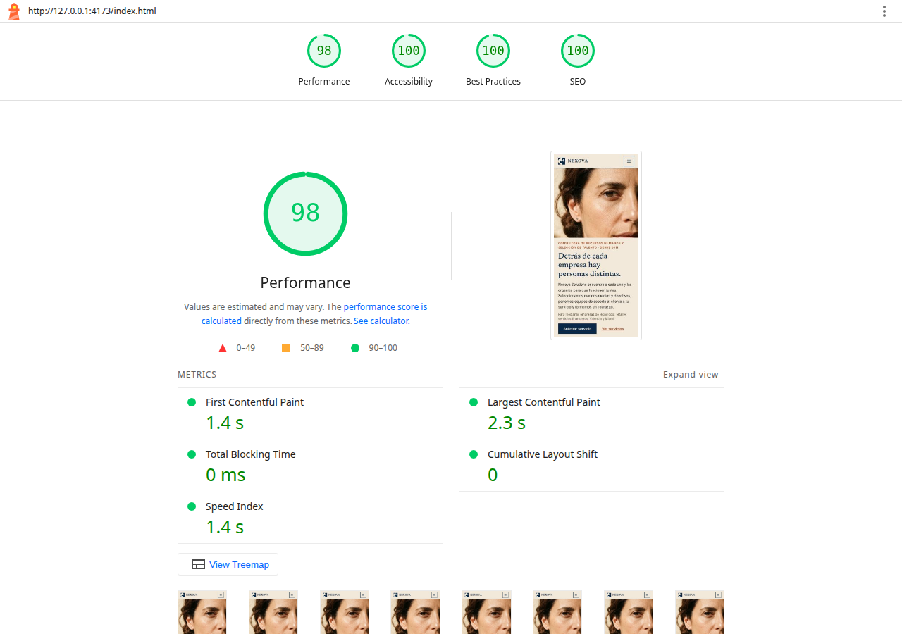
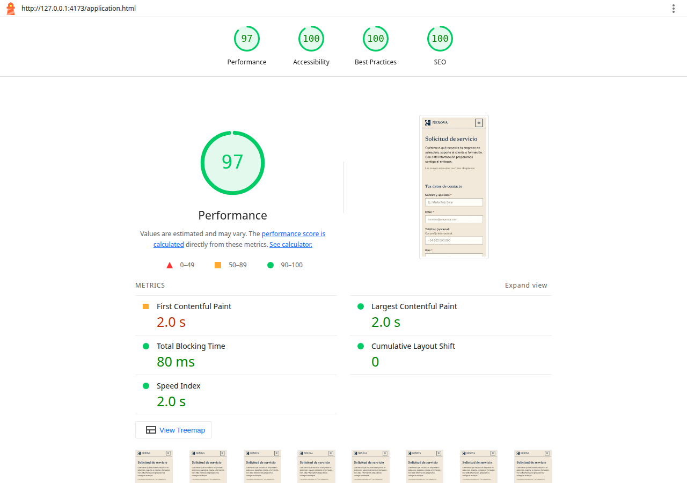
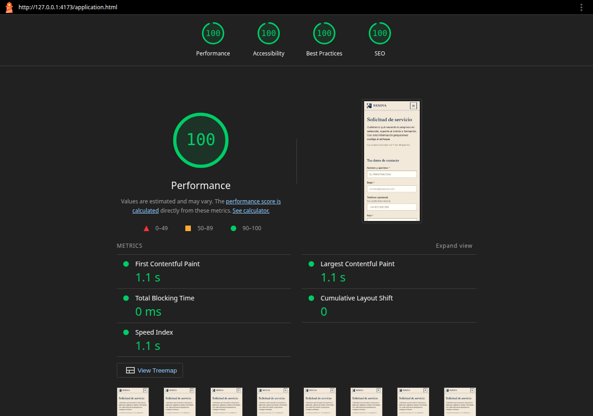
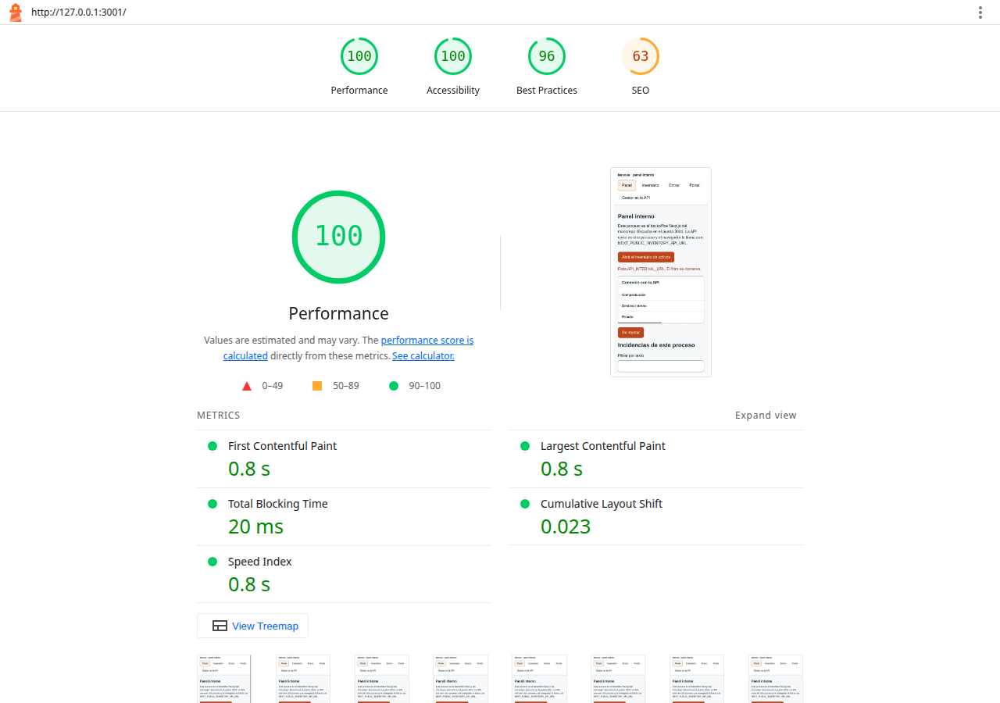
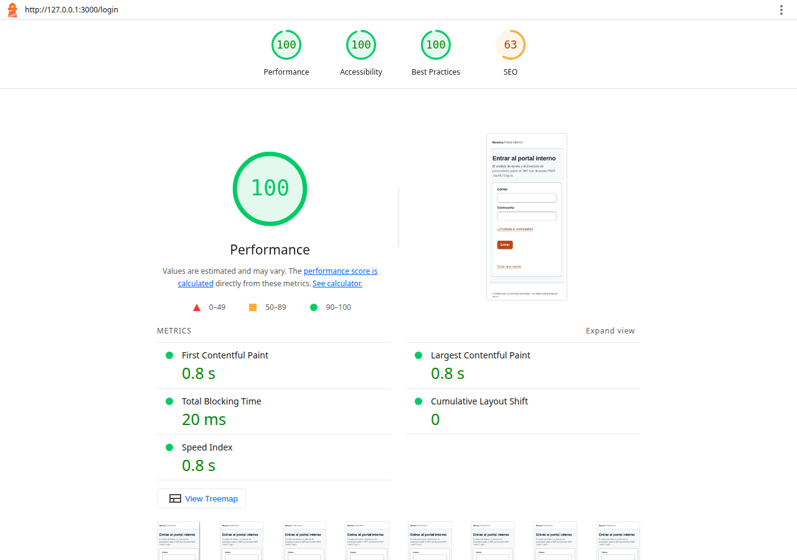

Lighthouse, antes y después
Mediana de tres corridas en Chrome headless, build de producción, throttling simulate. La captura es la corrida central. Móvil 390×844, RTT 150 ms, 1638.4 kbps, CPU ×4. Escritorio RTT 40 ms, 10240 kbps, CPU ×1. INP no sale en este modo de laboratorio.
Sitio corporativo · inicio, móvil
Perf 94A11y 100BP 100SEO 100

Perf 98A11y 100BP 100SEO 100
Sitio corporativo · solicitud, móvil

Perf 98A11y 100BP 100SEO 100

Perf 100A11y 100BP 100SEO 100
Backoffice · panel, móvil

Perf 100A11y 100BP 96SEO 63
Perf 100A11y 100BP 100SEO 63
Portal Next · entrar, móvil

Perf 100A11y 100BP 100SEO 63
Perf 100A11y 100BP 100SEO 63
El resto de capturas, escritorio incluido, está en audit/before/ y audit/after/. El detalle numérico de las tres corridas está en docs/performance-web-vitals/evidence/lighthouse-summary.json.